|
"The trouble is, we still know far too little, yet, to make programs with enough common sense to understand even how today's simple AI problem-solving programs work. But once we learn to make machines that are smart enough to understand such things, I see no special problem in giving them the "self-insight" they would need to understand, change, and improve themselves."
Minsky, Marvin, MIT Why People Think Computers Can't AI Magazine, vol. 3 no.4, (Fall 1982) |
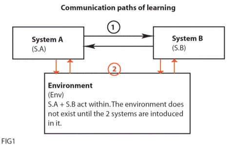
| "The apparent complexity of its behavior over time is largely a reflection of the complexity of the environment in which it finds itself." Herbert Simon, The Sciences of the Artificial", The Psychology of Thinking, 52, (MIT Press, 1999) |
Project Goal
To introduce two systems (S.A; S.B, fig1) that build the interface to themselves by looking at each other, without any help or intervention from the user or audience, ultimately to create a learning piece of software, that knows about itself "…to understand, change and improve…" oneself.
In order to give an appropriate and coherent description of our project, I should begin by putting in perspective the terms that we used and the influences that gave ground for the concepts presented in the project. First of all we need to understand what do we mean by interface. According to Lev Manovich, in his essay "Database as a Symbolic Form", to create "…a work in new media can be understood as the construction of an interface to a database. In the simplest case, the interface simply provides the access to the underlying database." He continues to explain that a database means an order or structure of a number of items or elements, which already carry meaning not because of their content but simply of the rules and principles they employ for their organizational method. In the project we look at S.A and S.B as databases consisting of plain text, without putting any importance on the content, ideas expressed, subject or goals that the author (whoever that might be) is trying to present. We look at the text as the medium, in this case it is a recorded medium, independent of who wrote it or who is going to read it. The texts are the objects that will look at each other by searching and correlating, translating the differences between each other only to transpose themselves to create a state that would describe the interface. Although we are using separate texts for the two systems, we still look at the same text characteristic to describe them. It is the organization of the parts that we should be interested in, rather than the individual properties, as Simon specifies in Chapter1, The Natural and Artificial Worlds. This is to ensure that no matter what the result, the user does not influence in any way the analogies made during the process.
In our project, there are two ways of communication that start separately, but continue simultaneously during the process to extend the properties and functions. Referring to Fig.1, first path starts between the two systems, and only once they search, gather and exchange enough information about themselves (for which we have set a pointer), they are ready to start defining themselves through the Environment in which they are left to exist. The structure for the Env. is again guided by the same principles as for S.A and S.B. But the only way for the environment to exist is through exchanging symbols with the two systems.
This is a good time in our description to point out what do we understand under the process of communication and ultimately the final goal - learning. Communication is based on Similarity Networks as introduced by Marvin Minsky in his essay "A Framework for Representing Knowledge", MIT-AI Laboratory Memo 306, June, 1974. Similarity Networks are built and used to find enough differences between two or more systems to create a distinction, leading to a description for each system. Thus in the project we use the differentiation of one to define the other. The models that are built out of these divergences have very specific characteristics that could be stored so that the Similarity Network could be used to grow further relevant to the goal of the project (goal: to create an interface only through learning). For that we refer to the chapter Memory and Learning: Memory as Environment for Thought, in "Sciences of the Artificial" by Herbert Simon (MIT Press, 1999). Although there is an exchange of information going between all the parts of the model in Fig.1, the only time that learning can occur, per Simon, is through understanding: "UNDERSTAND proceeds in two phases: it parses the sentences of the problem instructions, and then constructs the representation form the information it has extracted from the parsed sentence." In our project the parsing is done through the use of Similarity Networks, and the information is evident in the model of representation that we have chosen. The peaks and valleys that are continuously built reflect the differences that both systems agree upon when communicating with the environment. Thus an understanding is reached through commonalities in S.A and S.B and the differentials in the Env. The amount of high and lows come to represent the intensity of communication. The paths are driven according to the amount of semantic meaning. As they reach a point, which is saturated, the communication between the systems decreases, thus they proceed to move to a less Semantically Rich Domain. (Semanticaly Rich Domains: substantial meaningful content where you call upon large amount of specialized knowledge).
In the same chapter Simon suggests that: "Understanding systems, especially systems capable of understanding problem in new task domains, are learning systems." This is one of the most important models so that the goal for our project is achieved. Thus we follow to invest the idea of a storage where the models created after the process of Similarity Network are placed. According to that as each system traverses and describes the terrain or the new task domain, the paths that it takes are stored in a short term memory bank, so that if the same path is taken, the behavior is adjusted or adapted in accordance with that memory frame. According to Simon, it is only after a permanent change produced in the actions of the system that learning is achieved.
In conclusion what is left for the systems is ultimately to achieve a state of expertise by their ability to change their internal structure and configuration based on the environment they are deposed in. (this is obvious especially in the images representing the text structure changes in both environment and S.A and S.B, we can see how the behaviour is changed, leaving a mark in the surface of the terrain, only to be adjusted with the next traverse).
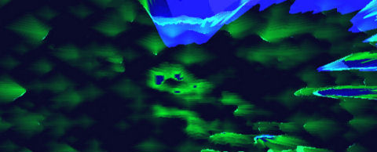
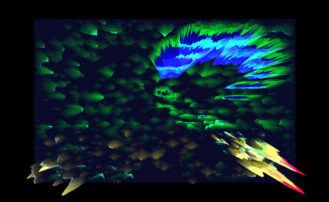
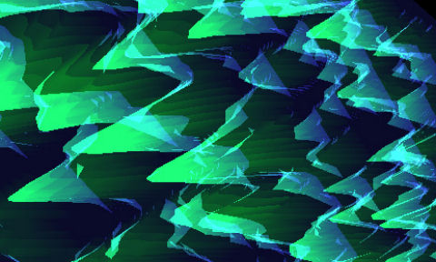
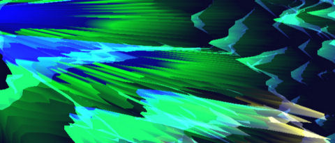
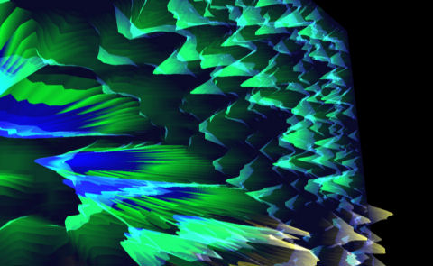
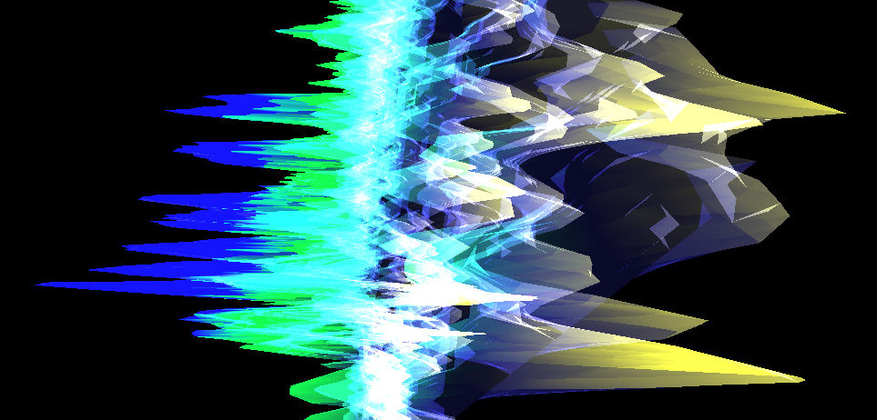
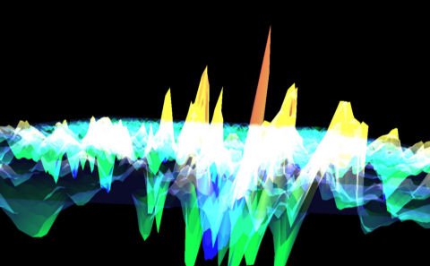
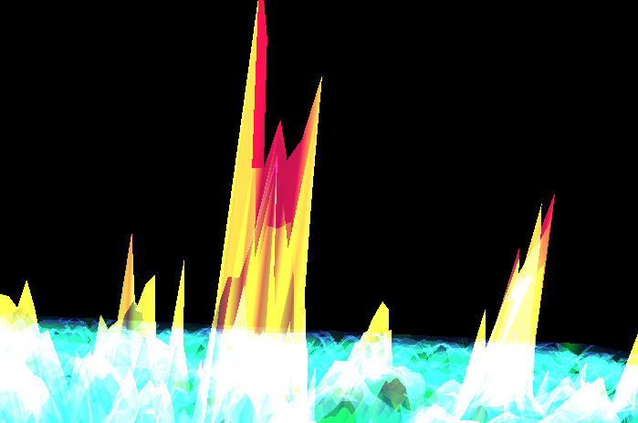
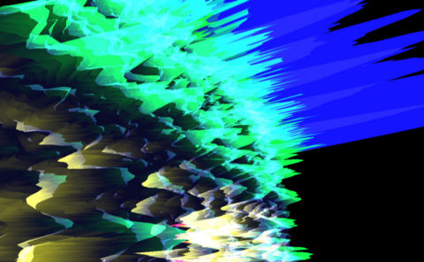
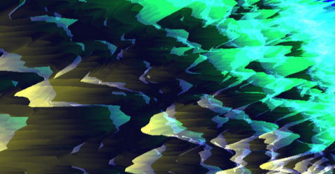
Download movie for the project, 17,7mb
Download source code for the project (MS Windows OS) 47kb
|